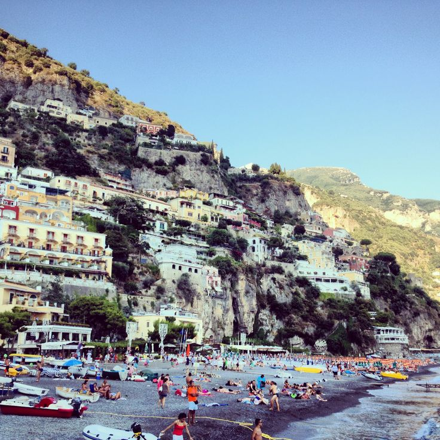
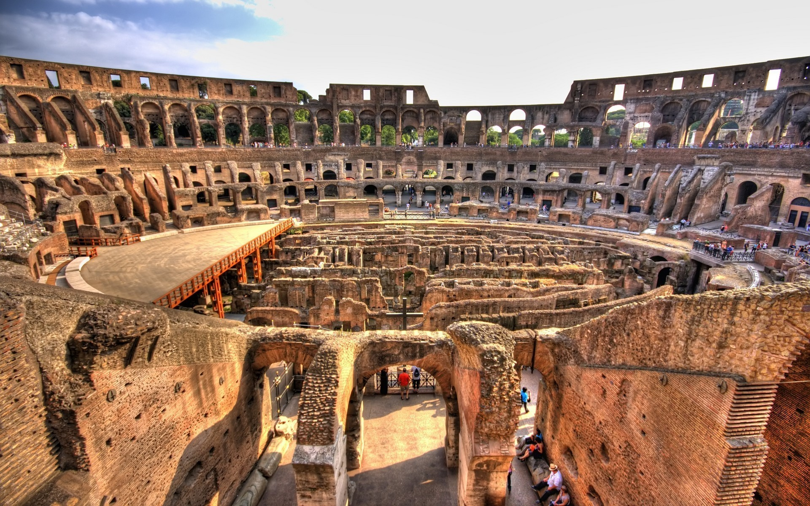

Don't Cruise Through Europe
Posted By: Jeffrey Goodall
A couple of weeks ago I was able to go on a trip to Europe with my family. My brother had been doing study abroad in Spain this past summer and my parents thought it would make a nice graduation present for me and my brothers since we have all graduated recently or are soon to graduate. Now I have been on many trips before and many cruises that went through the Caribbean, so I didn't think anything of it when my parents said they had booked a cruise around the mediterranean. But let me be the first to tell you that European cruises are NOT the way to see Europe, and here are the reasons why:
Not So Paradise Beaches
Lets start with the what most people think of when they think of cruises: Beaches. When you think of beaches you most likely think of long, endless stretches of white sand. There may be only one of two other families on the beach with you. This is what I think of and have experienced when I have gone to places such as the Bahamas or Jamaica. This is not how European beaches operate. European beaches are filled to maximum capacity with people.

Not only are the beaches crowded but they tend to also be extremely small. In come cases the beaches would only last around a single block. This is nothing like the vast open expanses we are spoiled with in the Americas. Finally, the worst part about beaches in Europe is the rocks. As you can see in the picture below many of the beaches are rocky and black. These beaches make your sunset stroll a much more painful experience and many times requires sandals. I guarantee your relaxing nap on the white sand in Mexico is much better than the stiff half sleep you'll receive while trying to rest on these European beaches.
The good thing is you won't be needing that rest because you:
Don't Get to Experience the Nightlife
One of the greatest things about Europe is that most of the cities have amazing nightlife. Barcelona, the city in which I spent the majority of my time in, is known for its nightlife. Whether you're going to one of the clubs located right off the beach., taking in a soccer game, or visiting any of the other experiences that these cities have to offer you're going to have an amazing time.
But you miss out on all of these when you take a cruise. When your schedule goes like this. Wake up at 7am, off the ship by 9am, spend the day on location, and then return at about 6pm. Luckily my family decided to stay in Barcelona a few extra days so I got to do a few of these things but the ship schedule means that you don't get to experience any of the amazing shows and activities that go on. No romantic dinners by candlelight in France. No night football games.No nothing. Sure the cruise ship provides activities to do on the ship but that is no substitute for the European experience that you came (and most likely spent a lot of money)for. Which brings me to my next point:
There Is Too Much To See
Lets take a city like Rome for example. This city was the center of all civilization for almost 1000 years of human history. There are ruins on top of ruins on top of ruins, all of which can be seen by you when you come to tour Rome. The only problem is it would take almost an entire week if not a month to see all of the history and culture that Rome had to offer. And you only have a single day in port because you're on a cruise. This happens so often. Almost all of the cities I visited: Barcelona, Rome, Florence, Naples, etc. needed more than one day to be fully experienced.
It's so sad. You're touring Rome all day then just when you want to see the next set of ruins your day gets ruined (pun definitely intended). The tour guide tells you that you have to make the hour long drive back to port or else the ship will leave you. These European cities need more time than that and cruises don't allow it.
All of this is not to say that I did not enjoy my European cruise, I did. This post is to explain why cruising is not the way to see Europe. Europe's beaches are not the same experience as Caribbean beaches and don't offer the same level of relaxation that you are used to from American beaches. Combine this with the fact that there is SO much to do in these European cities (a lot of which can only be done at night) and you arrive at the conclusion that maybe cruising isn't the best option for visiting Europe. I know if I did it again, I would be sure to pick one maybe two locations and spend the entire 10 days there. Best of luck to anyone headed to Europe soon.